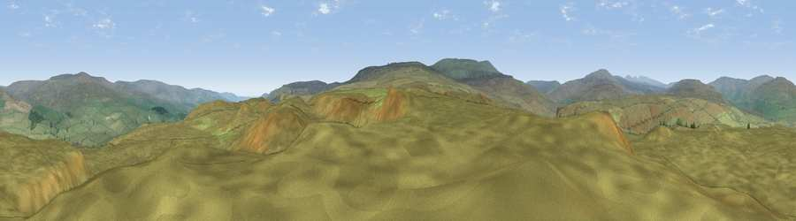

Viewpoint c10575_7684
#17059 in England · top 51% of its area beats it · —Where it is
The exact computed spot (NY 84225 28775). Click the marker for map links.
The view, rendered

A 360° render of this exact spot computed from the terrain model, tree cover and land cover — summer colours, afternoon light, calibrated against photographs of famous viewpoints. Real trees, hedges and buildings will differ in detail.
The panorama
Grey silhouette: terrain skyline in each direction (720 bearings, Earth curvature and refraction included). Dashed green: skyline with trees (+15 m) and buildings (+8 m) as obstacles. Blue strip: how far the ground is visible on each bearing.
Where the view opens
Wedge length = distance to the farthest visible ground on that bearing (vegetation-aware). Rings at 10, 25 and 50 km.
What fills the view
99% grassland
Angular shares of the visible panorama (visual magnitude), not map area. Landscape diversity 0.02 (0–1 Shannon).
Key numbers
More beautiful places nearby
The staircase of upgrades: each row has a higher view potential than everything closer. Driving times are estimates from straight-line distance, calibrated against real road routing — check an actual route before setting out.
| Place | Direction | Drive | Score |
|---|---|---|---|
| Viewpoint c10505_7686 | S · 3 km | ~8 min | 68.8 |
| Viewpoint c10501_7697 | SSE · 4 km | ~9 min | 70.9 |
| Viewpoint c10490_7651 | SSW · 5 km | ~10 min | 74.4 |
| Mickle Fell | SW · 6 km | ~12 min | 75.8 |
| Great Dun Fell | WNW · 14 km | ~25 min | 77.8 |
| Little Dun Fell | WNW · 14 km | ~26 min | 78.4 |
| Cross Fell | WNW · 17 km | ~29 min | 78.7 |
| Viewpoint near Plumpton | W · 34 km | ~51 min | 78.9 |
54.65382, -2.24602 · source: screening · position refined by local search. Computed location — check access rights before visiting.